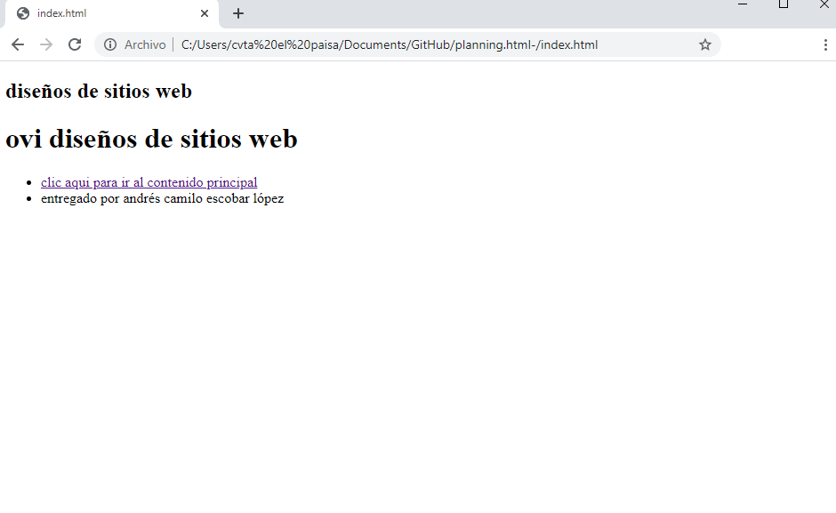

borrador del contenido
Contenido en HTML ( SECTION, ASIDE, FOOTER, ARTICLE)
conocer algunos de los elementos que hacen parte del lenguaje html
Una sesión es una variable que se crea en el servidor y esta variable puede ejecutarse sin que el usuario de la Web tenga conocimiento alguno de ello. Simplemente cuando pasas de una página a otra mediante un enlace normal y corriente, tendrás la variable disponible para usarla.
El elemento HTML aside representa una sección de una página que consiste en contenido que está indirectamente relacionado con el contenido principal del documento
El elemento footer representa al pie de una sección o documento, donde los autores habitualmente colocan firmas, información acerca del autor, información de licencias, documentos relacionados, etc. En muchos casos, los contenidos del pie de un documento son consistentes a lo largo de todo el sitio
El elemento article es un contenedor de bloques de contenido que se consideran independientes del sitio web y pueden, por lo tanto, ser vistos, reutilizados y distribuidos por separado, como por ejemplo, en la sindicación. Puedes encontrar habitualmente a este elemento encerrando artículos, entradas de blogs o mensajes de un foro.
Dar a conocer la importancia de HTML, section, aside,footer y article en la programacion de paginas web
- objetivo espesifico 1
objetivo especifico 2
- objetivo especifico 3
materiales
Enlace a Google
Enlace a aprende web
enlace a diseno web
maquetacion
